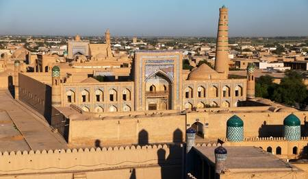
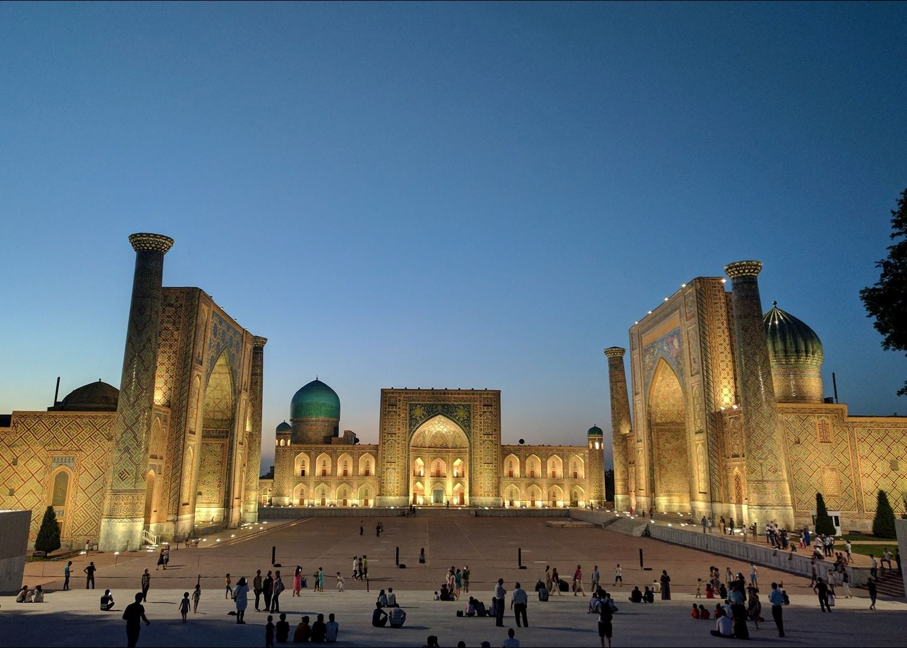
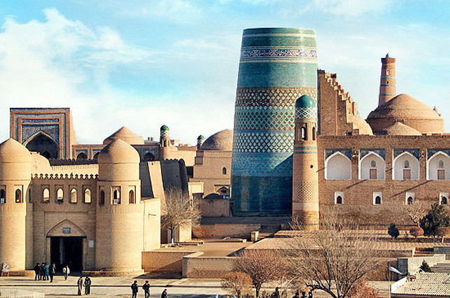
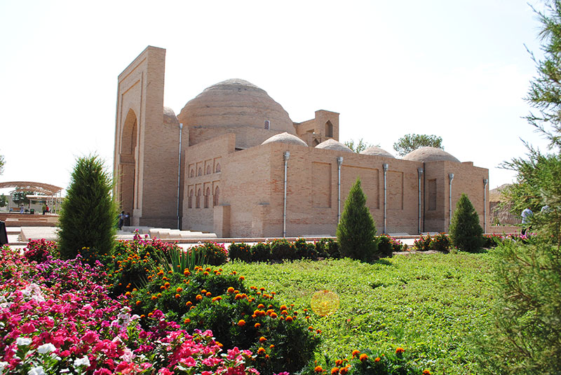
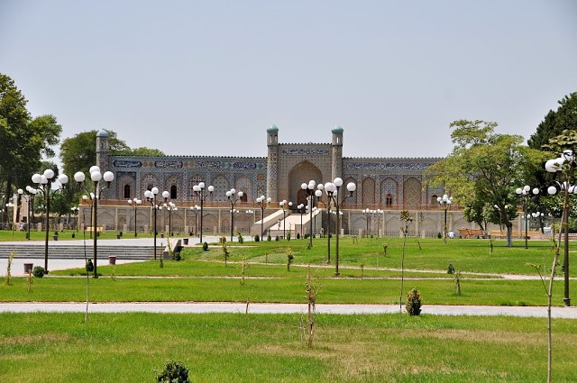

Regions

Welcome to Bukhara
Buxoro, also spelled Buchara, Bukhara, or Bokhara, oblast (province), central Uzbekistan. The oblast was constituted in 1938, but in 1982 much of its territory in the north and east was transferred to a newly formed Navoi oblast. Buxoro oblast mainly comprises the Kimirekkum Desert, with the lower reaches of the Zeravshan River in the southwest. The climate is continental, with cold winters and long, hot, dry summers. Annual precipitation is only 5–7 inches (125–175 mm). Karakul sheep are raised in the desert. Natural gas from major deposits discovered in the south in the 1950s is piped to the Urals and central European Russia as well as to the other Central Asian republics. Major cities are Bukhara, the administrative centre; Kagan; and Gizhduvan. Uzbeks constitute over 70 percent of the population. About 38 percent of the population is urban. Area 15,200 square miles (39,400 square km). Pop. (2017 est.) 1,843,500.

Welcome to Samarkand
Samarkand, Uzbek Samarqand, city in east-central Uzbekistan that is one of the oldest cities of Central Asia. Known as Maracanda in the 4th century BCE, it was the capital of Sogdiana and was captured by Alexander the Great in 329 BCE. The city was later ruled by Central Asian Turks (6th century CE), the Arabs (8th century), the Sāmānids of Iran (9th–10th century), and various Turkic peoples (11th–13th century) before it was annexed by the Khwārezm-Shāh dynasty (early 13th century) and destroyed by the Mongol conqueror Genghis Khan (1220). After it revolted against its Mongol rulers (1365), Samarkand became the capital of the empire of Timur (Tamerlane), who made the city the most important economic and cultural centre in Central Asia. Samarkand was conquered by Uzbeks in 1500 and became part of the khanate of Bukhara. By the 18th century it had declined, and from the 1720s to the 1770s it was uninhabited. Only after it became a provincial capital of the Russian Empire (1887) and a railroad centre did it recover economically. It was briefly (1924–36) the capital of the Uzbek Soviet Socialist Republic. Samarkand today consists of an old city dating from medieval times and a new section built after the Russian conquest of the area in the 19th century.

Welcome to KHiva
Khiva, also spelled Chiwa, Chiva, or Jiva, city, south-central Uzbekistan. It lies west of the Amu Darya (ancient Oxus River) on the Palvan Canal, and it is bounded on the south by the Karakum Desert and on the northeast by the Kyzylkum desert. A notorious slave market was centred there from the 17th to the 19th century. The city is also known for the Islamic architecture within its 590-acre (240-hectare) historic centre.

Welcome to Termez
Termez is located on the right bank of the Amu Darya river and is one of the ancient cities of Central Asia. The city evolved throughout the history on different places around the modern city, reflecting multiple cultural layers depicted in remains of historical sites. The cultural heritage that was developed from the inception of the city was completely destroyed by Genghis-Khan in 1220, after the city refused to surrender peacefully. A new city was erected to the east of the old town. Rui Gonzales de Klaviho, the ambassador sent by Castilian King Henry III to Amir Temur, gave the best description of this new town: "entering the city, we were going so long crossing squares and crowded streets that we came home tired and angry. A new location, established in the XIX century, had been growing to the south of the late medieval location, closer to the Amu Darya. Before it was destroyed by Genghis Khan, Buddhism played a considerable part in the ideology of ancient Termez for seven centuries I - VII (AD). Several Buddhist sites were uncovered during the archeological works around the city which remind about the days when Termez was one of the Buddhist centers.
